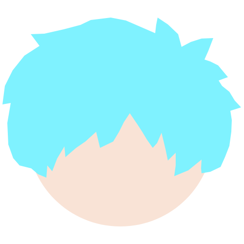

ABOUT
BUY SOME SHOES は、東京を拠点に活動する 3 人組ポップパンクバンド。 ネオンカラーの世界観とエレクトロ要素を融合させたサウンドで、 2025 年のデビュー以降、国内外で注目を集めている。

カイ – Vocal / Guitar
フロントマン。力強いボーカルとキャッチーなメロディが特徴。
サム – Bass
重厚なベースラインで楽曲を支える存在。ライブでのパフォーマンスにも定評がある。
シュウ – Drums
パワフルなドラミングでバンドのグルーヴを生み出す。エレクトロ要素の導入にも積極的。